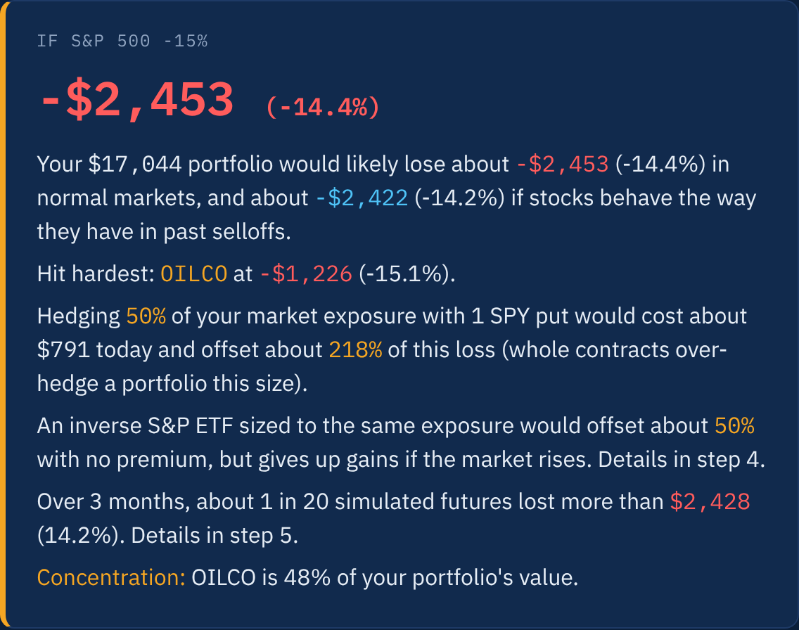
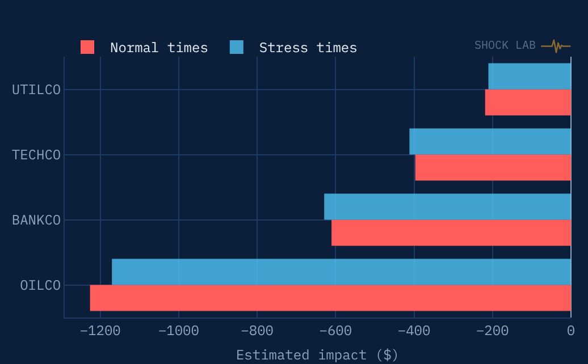
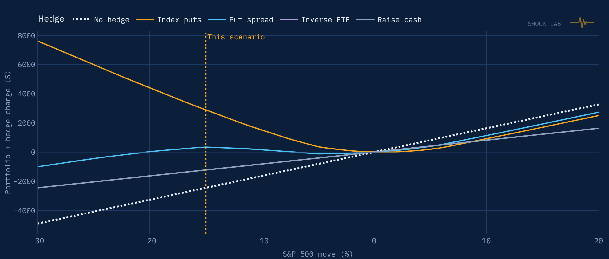
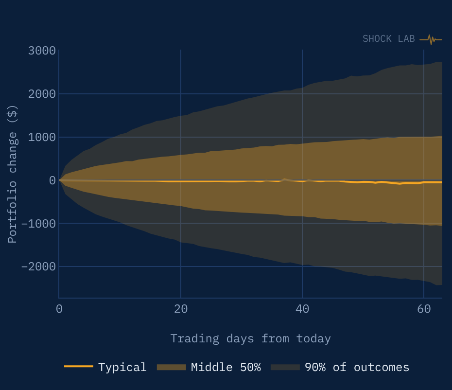
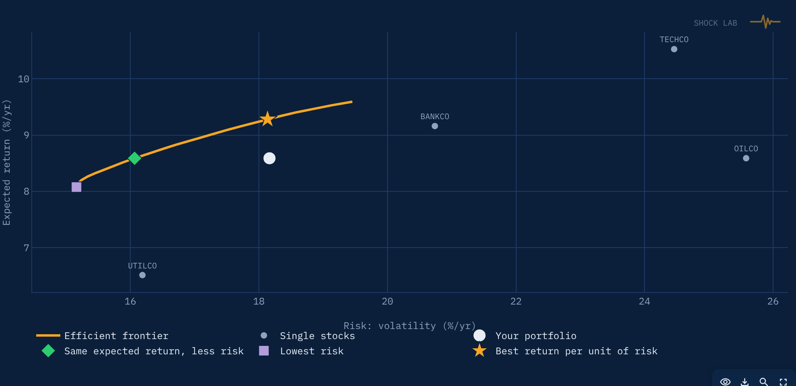

Institutional stress tests for everyone
Enter your holdings, pick a shock, like oil +20%, rates +1 point or the S&P 500 −15%, and see what it would do to every position and what it would cost to protect it. These are the same tools risk desks use, explained in plain English.
No sign-up. Type tickers in or upload your broker's CSV. Your file never leaves the app.

How it works
Shock Lab learns how each of your stocks has reacted to the market, oil, interest rates, the dollar and gold, then applies that to the scenario you choose.
Type in up to 30 tickers and share counts, or upload a positions export from Fidelity, Schwab, Vanguard, E*TRADE and others.
Use a preset or drag the sliders. Anything you leave at zero is filled in with how it has typically moved alongside your shock.
Get a plain-English summary, then dig into every holding, hedge, simulation and model detail. Nothing is hidden.
Stress test
A factor regression for each stock estimates its sensitivity to the market, oil, rates, the dollar and gold. Each result also comes with a second estimate fit only on the market's worst days, when stocks tend to fall together.

Hedge it
Compare index puts, put spreads, an inverse ETF or simply raising cash. Option prices come from Black-Scholes with the live VIX and a volatility skew, and the full greeks are shown.

Simulate
Monte Carlo replays random week-long stretches of real markets since 2006, including 2008 and 2020, through your portfolio. You get the typical outcome, a 1-in-20 bad case, the average of the worst 5%, and the odds of losing 10% or more, with or without a hedge.

Optimize
A light mean-variance view built only from the stocks you already own: the lowest-risk mix, the same expected return with less risk, and the best return per unit of risk, plus how each would fare in your scenario.

Built to be checked
Every beta, standard error, greek and assumption is on screen. And the model is graded on its own track record.
Betas are fit only on data from before 2008, COVID and 2022, then compared with what actually happened.
Each estimate carries a 95% range from uncertainty in the betas, and rolling charts show how betas drift over time.
Prices from Yahoo Finance; oil, yields, the dollar, credit spreads, VIX and T-bills from the St. Louis Fed (FRED).
Download a branded PDF report, an Excel workbook with every table, or a CSV.
Holdings are used for your session only. Nothing is stored or shared.
Regression, co-moves, stress betas, Black-Scholes, bootstrap and mean-variance, written out step by step.
Run your first stress test in about a minute, with no sign-up.